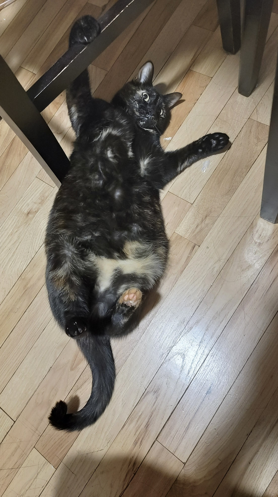

Another day. One thing to mention is that David has not gotten back to me. I've pinged him a few times and he hasn't answered, so I think that funding avenue is kaput.
I began Monday by completing chatper 12 of Starjump. It felt quite good to complete two chapters in the span of two weeks. These chapters are quite sad and a lot of dreams are getting crushed. When I shared it with Mindy I was wondering if it was too sad. She thought that we were close to the finale and I think that might be because it feels like the "All is lost" moment has come early. Ultimitely I'll see if it breaks the pacing once I'm done with the first draft.
After completing the chapter, I began work on the ShexJ to Typescript library that I need to build. The problem turns out to be more complex than I initially thought, but I'm working through it.
By the end of the day, I remember being pretty happy with how things were going.
On Tuesday, I continued to work on the ShexJ to Typescript Library, but I noticed my ShexJ traversal library didn't allow transformer functions to get access to parent elements in the ShexJ object, so I spent most of my time refactoring the traversal library to allow that.
I also talked with the brother of someone I went to college with. Charlie Hirsch. Turns out, he's an analyst for a VC called Kenetic Ventures that does early stage capital. I gave him a bunch of opinions about Solid and decentralized tech. I know that analysts aren't the ones that make the decisions. But, I said I'd appreciate being set up with one of the partners. I haven't heard back, so I don't think it's happening, but it's still something to keep in mind. I'll add him to my mailing list.
The biggest thing to happen today was about rent. Ailin and I had decided to stay in New York because moving furniture was a pain, but our landlord wouldn't give us a clear answer until May. So I called up the landlord and she said that they were raising the rent to $2800! That's too much for us, so we decided we needed to move. But, then I started thinking. We didn't need to stay in New York. We could continue to explore. Going to Shanghai as originally planned may be a bit too much, but I remember Jonathan saying that moving to San Francisco might just be the best case scenario for raising money because you can just meet VCs at parties. It might be fun to go to SF as someone not working for one of the big tech companies.
I had a long conversation with Ailin, she said she was indiferent to where we're going as long as it has people of culture. We looked for Lower Eastside housing and Brooklyn housing. She even was toying with moving to Africa as a part of the peace core. I encouraged her to apply, though I don't know how I feel about living abroad at this point. It's much easier to just build the company in the US (though maybe going to Europe would make those grants available).
But, we also talked about a lot of things. And thinking about moving and the future put a lot in perspective. I've been trying to raise money for this startup for a couple of months now, and it doesn't seem like I'm making any progress. The Solid ecosystem might just not have room for someone like me, and if that's the case, it might be time to look elsewhere. I at least need to focus on finding ways to make money other than raising funds. I'm talking with the Chief Information Officer of GT next week. Everyting might depend on that. If we can make a deal, then that means there is space in Solid for me to get a foothold. If we can't, then that's an indication that I might need to look elsewhere.
On Wednesday, I refactored the "Annotation" and "SemAct" parts of the traversal library.
Ailin scheduled a visit to see a Brooklyn apartment in the afternoon. We went over, and we were both not super impressed. Brooklyn doesn't have the same vibrancy as the lower Eastside. There may be parts that are, but at least this neighborhood felt a bit more residential and we like living near restaurants. So, we decided that if we stay in New York, we want to stay in the lower east side.
I also talked to Emmet about building React Native compatibility into their authentication library. He said that Inrupt could provide funding to do a security review on it, but it didn't seem like he would pay me for it. But, as mentioned before, I have to find ways to make money in the Solid ecosystem. I can't keep going to free. Liqid Chat was free, the dev tools were free. I like all the positive comments I get for the stuff I'm building, if I keep going at this rate, I'm going to run out of money. I got the idea to fuel an open source project with donations from Michiel, who I currently donate to to maintain an independent Solid test suite.
The case for React Native support for the auth library is simple (it will allow for more Solid mobile apps) and it's definitely in my wheelhouse. That's why I selected it as a project to see if I could sustain development with donations. I created a donation page and a short video to explain to all potential donors what their money would be going towards. But, I shared that video with Emmet before posting it (because I mentioned how it would be a part of Inrupt's library and how they'd pay for the security review). And in typical Inrupt fasion, it needs to go through a lot of approval before I can post it. So, now I'm waiting until Tuesday at the earliest to even ask people if they'd be willing to donate to a Solid related project.
I also got a big let-down when I found out that I was using an old version of ShexJ the entire time. So, I needed to update my entire traversal library and redo all the ShexJ to Typescript code I was working on. I was feeling pretty down at this point in the day.
But that was made better by going to a KPCB fellows alumni conference. I heard a lot of encouraging stories about other former fellows creating their own startups, and I got to see some people I knew from the program before. It helped make the day a little bit better.
Friday started with the the monthly Solid networking event. After a whole fiasco with time zones, we finally met up, and there was a decent audience. We talked a good amount and I even got some good advice about some features in JSON-LD. I wasn't considering putting JSON-LD support in my typescript library, but one of the member informed me that JSON-LD is able to represent inverse constraints via the `reverse` property. So, that's pretty cool.
I spent the rest of the day heads down updating the Shex Traversal Library. And I'm glad I did it too. It's much better now. It still is kinda large filesize wise, and the code is definitely more repetative than I'd want, but it works. I finally published the new version around 1am.
On Saturday, we submitted an application to one San Francisco apartment (the landlord is super interesting. She's a civil rights activist who was a freedom rider and also served on the San Francisco board of supervisors and was the target of an assassination attempt). We also got a tour (virtually) of another. They're both relatively affordable, the one we got a tour of is even cheaper than the one we have right now. Ailin is feeling a bit better about San Francisco. At first she thought these apartments were scams because they were too cheap. Her big concern with SF is that it would be too expensive, but I promised her that I wouldn't go over $2500/month in our search, and we found something that's $2100 a month with two bedrooms, so that's awesome!
Another big event was that I finally have a completed story outline for Star Jump. There were always gaps in it before, but now I know exactly what's going to happen in each chapter. I just need to get to writing them. Only 11 more chapters to go!
Finally, I put more thought into the Georgia Tech ultimatum. The thing that scared me about it is if I don't seal the deal, this might not just be the end to this attempt at building a startup, but also an end to working on Solid for now. I don't want to go back to Inrupt. It's a little too restrictive on what I can an cannot do. Plus every project I worked on ended up getting canceled by management in one way or another. It was frustraiting after a while and it felt like the leadership didn't respect my opinion as much. But then I thought about it more and there are other opportunities. Well, for one, Graphmetrix seems to be open to employing me, but I'm not a super fan of working for them. But, I would be a super fan of working for Janeiro Digital. I really like and respect Justin Bingham and Eric Prud'hommeaux. I think they're some of the most practical visionaries working on Solid right now. Working alongside them would be pretty cool. So, If GT doesn't work out, I might talk with JD to see if they'd like to have me onboard.
I didn't do much on Sunday. But, Ailin's friend, Michael, and his wife came over. They'll be staying at our place to watch Licky (and explore the city) while we go visit my parents in Georgia. We talked a bunch and turns out Michael is intersted in reading Star Jump! So, he'll be giving his feedback.
And here we are on Monday. I spent today reading the specification for JSON-LD so I could begin to formulate how to build the ShexJ to Typescript library with JSON-LD in mind.
Tomorrow is the meeting with Georgia Tech, so we'll see what happens then.
Also here's a few cute picture of Licky:
